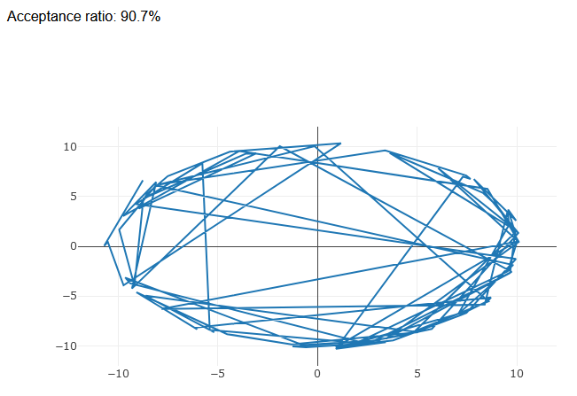
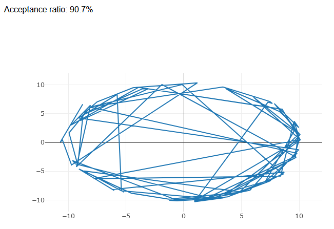
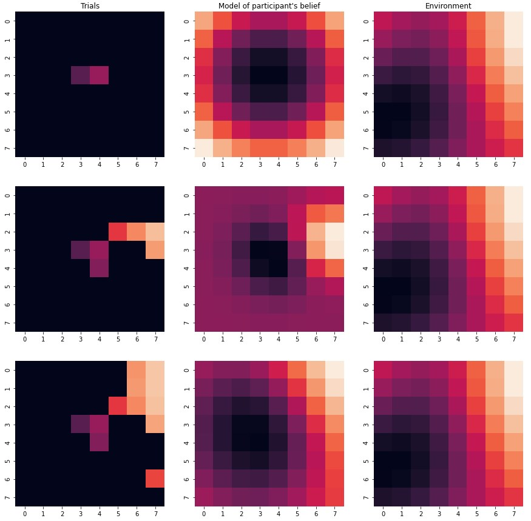
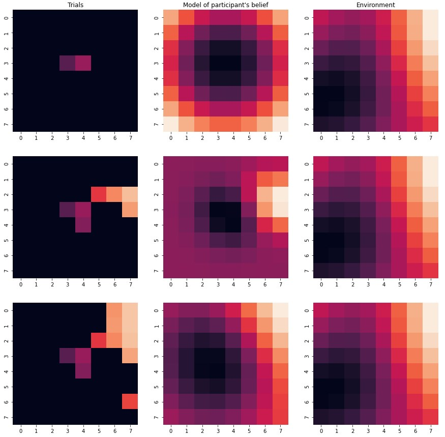

Discord-botti pelidatan analysointiin
[code]
Tämä projekti on monipuolinen Discord-botti, joka on ohjelmoitu Pythonilla ja suunniteltu auttamaan pelaajia analysoimaan suositun pelin otteluhistoriatietojaan. Botti tarjoaa käyttäjille mahdollisuuden seurata suorituskykyään, tunnistaa trendejä ja löytää kohtia, joissa voi parantaa – kaikki Discordin kätevän ja tutun ympäristön kautta. Lisäksi botti tarjoaa reaaliaikaisia päivityksiä siitä, mitä huippupelaajat tekevät, antaen käyttäjille kilpailuedun näyttämällä uusimmat strategiat, rakenteet ja trendit pelin parhailta pelaajilta.
Botti hyödyntää Discordin käyttäjäystävällisiä slash-komentoja, mikä tekee siitä erittäin helppokäyttöisen ja kaikille pelaajille saatavilla. Discordin saumattoman integraation ansiosta käyttäjät voivat nopeasti hakea otteluhistoriansa, tarkastella yksityiskohtaisia tilastoja ja saada käytännönläheisiä oivalluksia – kaikki esitettynä yhdessä visuaalisesti miellyttävässä kuvassa. Tämä suunnittelu takaa, että tiedot ovat helposti luettavia ja samalla esteettisesti viehättäviä, parantaen käyttökokemusta kokonaisuudessaan.
Tällä hetkellä bottia käytetään yli 300:ss ä Discord-palvelimessa, ja sillä on verifioitu bottistatus, mikä todistaa sen luotettavuuden ja arvon peliyhteisölle. Olitpa sitten rento pelaaja, joka haluaa kehittyä, tai kilpailullinen pelaaja, joka pyrkii pysymään kärjessä, tämä botti on sinun paras työkalusi otteluanalyysiin ja huippupelaajien tietojen seuraamiseen – kaikki suoraan Discordin sisältä.
Keskeisimmät käytetyt taidot/teknologiat: Python, data-analyysi, datan visualisointi


  x.classList.toggle('current'))">
 x.classList.toggle('current'))">
  x.classList.toggle('current'))">
 x.classList.toggle('current'))">